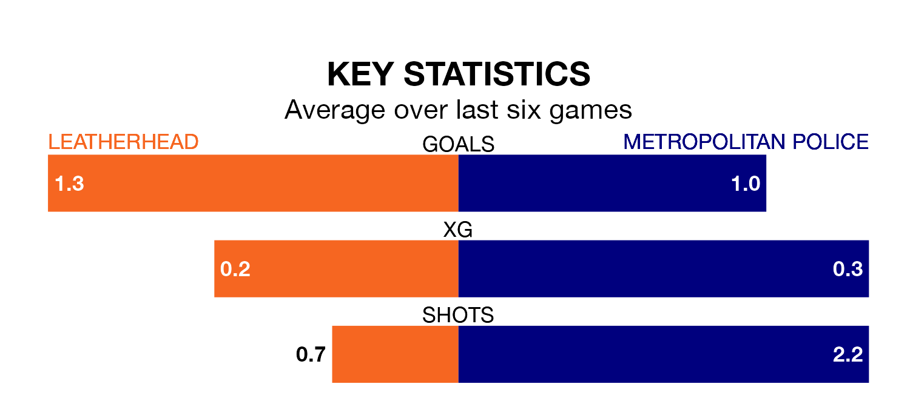

Metropolitan Police travel to Leatherhead on Saturday in the Isthmian League Division One South Central.
The visitors come into the game on the back of a defeat in their last match, having lost to Uxbridge 2-0 away.
Leatherhead, meanwhile, drew their last match, 1-1 against Chipstead.
In the last 10 years, Leatherhead and Metropolitan Police have played each other on nine occasions. Leatherhead won five of them, Metropolitan Police two, and they drew twice.
On average, Leatherhead scored 1.7 goals and Metropolitan Police 1.1 in those matches.
Their last meeting was on November 11, when Leatherhead won 4-0 away.
Leatherhead are fourth in the table after 30 games, of which they have won 19 and drawn five, earning 62 points.
Metropolitan Police are 12 places behind the hosts in 16th, with eight wins and six draws putting them on 30 points.
With 32 goals in 30 games so far this season, the away side are scoring at below the league average rate with 1.1 goals per game. And they are conceding at an average rate, letting in 52 goals at a rate of 1.7 per game.
Leatherhead are also below average scorers, with 1.6 goals per game, compared to a league average of 1.7. They have conceded 0.7 goals per game.
Leatherhead are in mixed form in the Isthmian League Division One South Central, with three wins and a draw from their last six games.
With three wins and three losses over that period, Metropolitan Police's form is slightly worse – they have taken nine points from 18, compared to the home team's 10.
Updated: 09:34 (UTC), 08/03/24